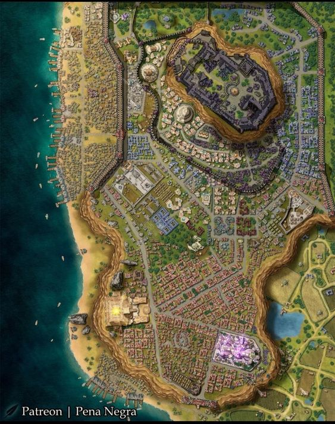

Fique Por Dentro de Tudo no Mundo Geek!
TechGeek Games Anuncia o Lançamento de um MMO Inovador: Uma Revolução no Mundo dos Jogos Online
A indústria de jogos está prestes a receber um terremoto de inovação e excitação com o anúncio da renomada desenvolvedora de jogos, TechGeek Games. Esta gigante do entretenimento digital revelou planos para o lançamento de um Massively Multiplayer Online Game (MMO) que promete não apenas superar as expectativas dos jogadores, mas também redefinir os padrões de excelência dentro do gênero.
Com uma tradição de excelência em design e uma equipe de desenvolvedores talentosos, a TechGeek Games se estabeleceu como uma das principais forças no mundo dos jogos. Seus títulos anteriores foram aclamados pela crítica e adorados pelos jogadores, mas este novo MMO promete elevar o bar a alturas ainda não alcançadas.
Uma das características mais impressionantes anunciadas pela TechGeek Games é a promessa de gráficos deslumbrantes. Com o avanço da tecnologia de renderização e o investimento em recursos de última geração, os jogadores podem esperar ser imersos em um mundo virtual rico em detalhes e beleza visual. Cada paisagem, cada criatura e cada elemento do ambiente foram meticulosamente projetados para proporcionar uma experiência visual deslumbrante.
No entanto, a excelência da TechGeek Games não se limita apenas à estética. O novo MMO promete oferecer um vasto mundo aberto para os jogadores explorarem. Desde vastas planícies até montanhas imponentes, florestas exuberantes até desertos escaldantes, o mundo do jogo é um convite à aventura e à descoberta. Os jogadores terão a liberdade de vagar por esse vasto território, encontrar desafios emocionantes e fazer descobertas surpreendentes a cada esquina.
Além disso, a TechGeek Games está introduzindo mecânicas de jogo inovadoras que prometem revolucionar a forma como os jogadores interagem com o mundo virtual. Desde sistemas de combate dinâmicos até ferramentas de criação de conteúdo robustas, o novo MMO está repleto de recursos que visam aumentar a imersão e a diversão dos jogadores. Com a promessa de uma jogabilidade envolvente e cativante, este título está pronto para se tornar o próximo marco na evolução dos jogos online.
O CEO da TechGeek Games, John Smith, expressou sua empolgação com o projeto, afirmando: "Estamos comprometidos em oferecer aos jogadores uma experiência que vá além de suas expectativas. Este novo MMO é o resultado de anos de trabalho árduo e paixão pela criação de jogos de qualidade. Estamos confiantes de que os jogadores ficarão encantados com o que temos a oferecer."
Com o anúncio do lançamento iminente deste MMO inovador, a comunidade de jogadores está ansiosa para mergulhar neste novo mundo virtual. O hype está crescendo à medida que os detalhes adicionais sobre o jogo são revelados,X